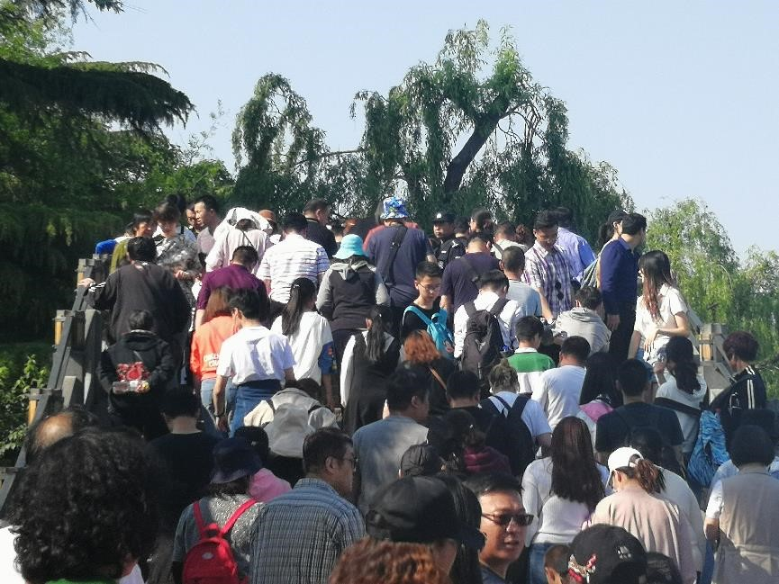
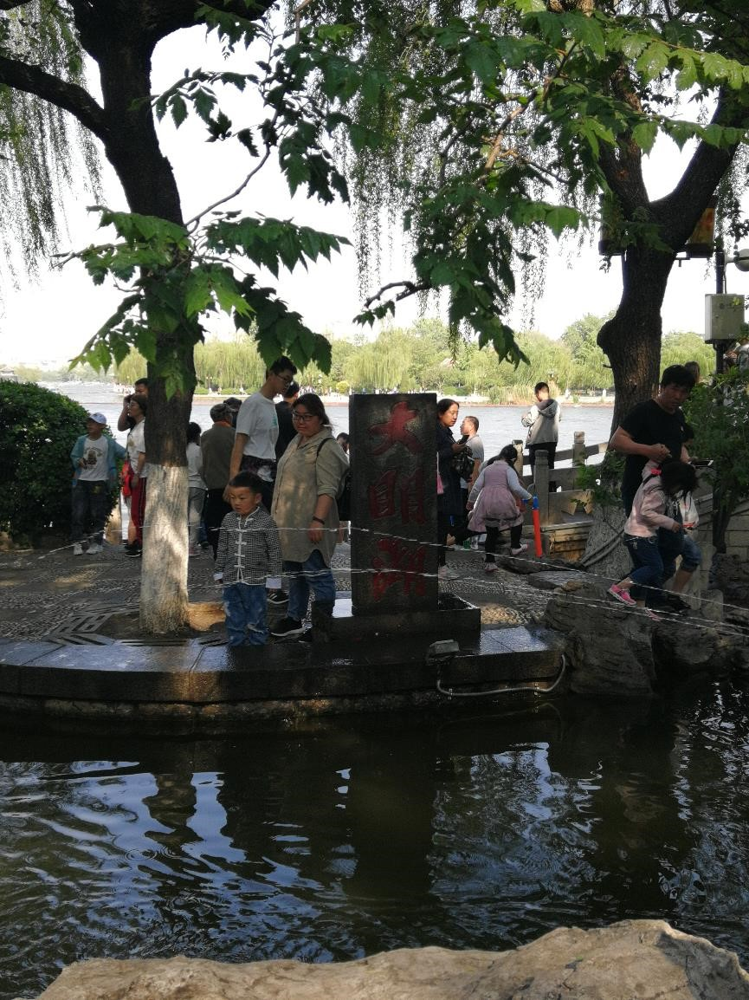
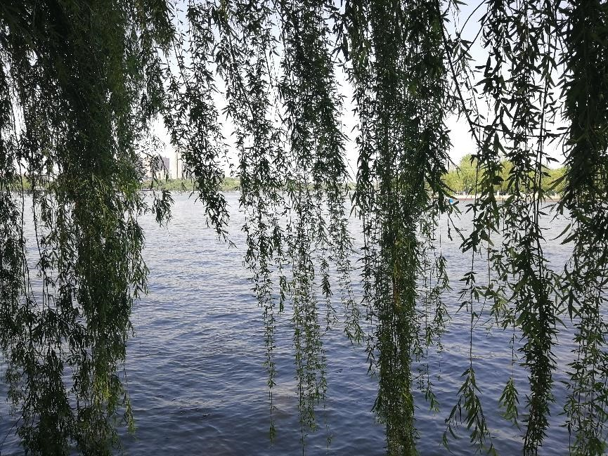
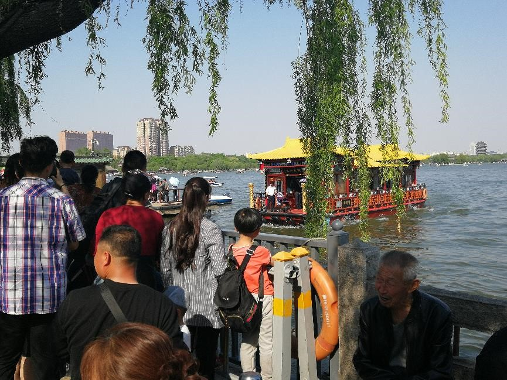
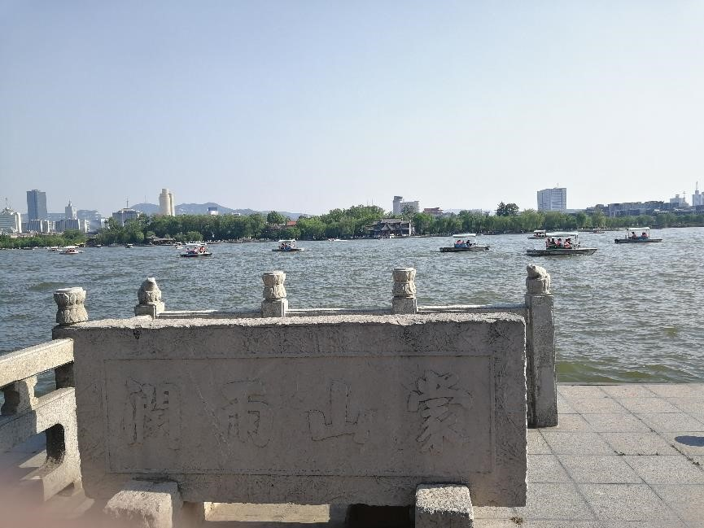
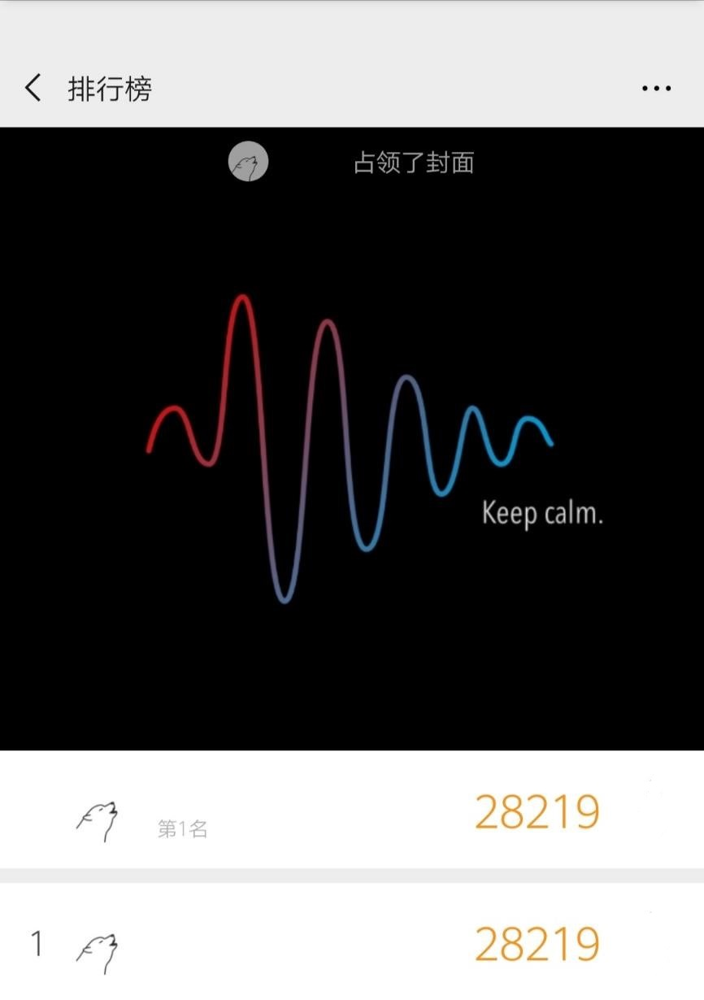
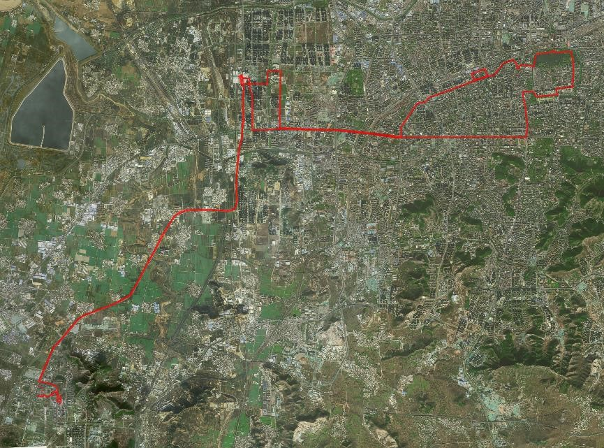

五一假期，第一天在宿舍宅了一天，也没做什么，反正就是无聊。但是第二天，就有人问我去不去大明湖转一转，不是很远，再加上我觉得也该出去看一看了，就起了个早，结果了，同行的人直到中午才回我消息……然后，一行三傻顶着中午十二点多的大太阳去观景了。
学校西面开通了一个什么地铁还是轻轨什么的，我也傻傻分不清，一会架高在路上又下到地下去，听说是四月一开始运行的，我没去坐过，只是看见那候车厅什么的很气派，又大又暗(这不是重点，应该是没开灯所致)，自助买票，到济南西也就二十多分钟，比起神速公交车来说是相当快了。刚才说到一会地上一会地下的，从济南西的站下了车厢，我还以为在地面上(上车的地方是架起来的)，结果所有下车的人都在向上去，让我摸不到头脑，然鹅跟着人群上爬之后出来，到了什么济南火车西站广场，才发现刚才是在地下……出来之后，才找个公交车，往历下赶。
其实我个人并不抵触坐公交车的，相反，我觉得坐公交还是挺高兴的，尤其是在外地。找一个nian er(地方的意思),静静的地坐着，看着车上人来人往，有焦急的上班族，带着惊惧眼神的学生党，也有带着陌生的眼光四处张望的老年人……各型各色。公车，我觉得从某种意义上讲，是一个城市的缩影，记载了这个城市的人文风俗，通过他们讲话的方式，可以看得出他们的生活习惯。这种感觉，尽管是他乡，却总让我有种家乡的感觉。譬如这次，一个面色绯红满头大汗(室外27℃)的微胖妇人，带着她婆婆推着婴儿车挤上车，然后和她婆婆聊着家常。看到这些，想象她们是趁五一假期，妇人带着婆婆孩子出来玩玩，透透气……
下车之后是两公里的路程，路上没见到几个单车，就决定步行去。然而却是低估了济南的夏天。早些时候就听说济南的夏天是真的热，就是没有春天一般，从冬天，猝不及防的就热了起来……阳光下的一切都被太阳炙烤着，树的枝条也在微风的吹动下无精打采的摇动。浓密的树荫下，有老人在看着自己的小孙子，有人在下棋，有人在聊天。好一副祥和的老城景色，尽管，天上的太阳无情，但说实话，树荫下却实舒服。不像我在的大学城，整日的给我一种压抑的气氛，天空也永远是灰蒙蒙的感觉……
不知过了多久，去掉中间走错路的尴尬，总算是见到人群了，那不用想，就知道是到景了。但是，人，是真的多，尤其是入口的地方，进去之后一个小桥，自行感受。

入眼就是

然后就是围湖晃悠，其实说实话，真的没有什么好看的，来了倒成了看人，一对对，一家家，有吃着东西的，有遛着狗的，有拍照的，有聊天的，好在湖边树多，也没能全程暴露在烈日之下。转的途中，见到一些娱乐项目，但是都是有刺激性的，都类似大摆锤之类，话说是倒贴钱都不上了，只是看看都觉得激素上头。
四面荷花三面柳，一城山色半城湖。

游艇和游船

以及这个不知道怎么读的东西……

最后，公交车上站了一个半小时(我觉得公交就是这个城市的微型社会，能够表现这个城市的风俗人情)，地铁半小时回城。
到晚上微信运动推送的时候，果然第一……然后我也是第二天才看到，因为回宿舍之后已经不知死活，就睡到……

最后的最后，就是昨日的行程。

大明湖，没有见到夏雨荷……